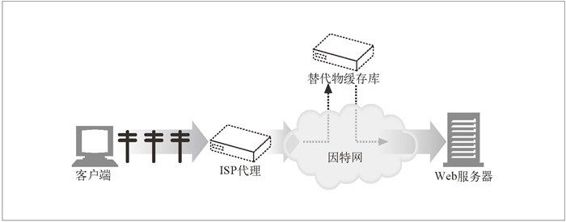
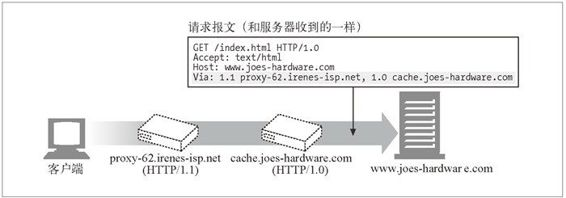
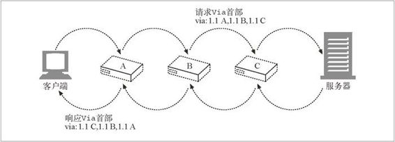
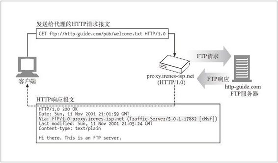
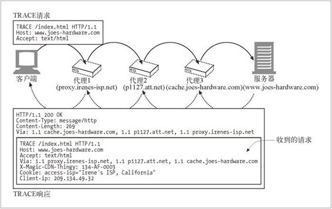
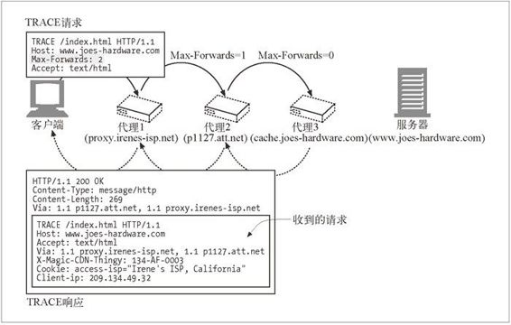

6.6 追踪报文
现在，在将 Web 请求从客户端传送到服务器的路径上，经过两个或多个代理是很常见的（参见图 6-19）。比如，出于安全和节省费用的考虑，很多公司都会用缓存代理服务器来访问因特网，而且很多大型 ISP 都会使用代理缓存来提高性能并实现各种特性。现在，有相当比例的 Web 请求都是通过代理转发的。同时，出于性能原因，把内容复制到遍布全球的替代物缓存库中的情形也越来越常见了。

图 6-19 访问代理和 CDN 代理构建了一个两级代理层次结构
代理是由不同厂商开发的。它们有不同的特性和缺陷，由各种不同的组织负责管理。
随着代理的逐渐流行，我们要能够追踪经过代理的报文流，以检测出各种问题，其重要性就跟追踪经过不同交换机和路由器传输的 IP 分组流一样。
6.6.1 Via 首部
Via 首部字段列出了与报文途经的每个中间节点（代理或网关）有关的信息。报文每经过一个节点，都必须将这个中间节点添加到 Via 列表的末尾。
下面的 Via 字符串告诉我们报文流经了两个代理。这个字符串说明第一个代理名为 proxy-62.irenes-isp.net，它实现了 HTTP/1.1 协议，第二个代理被称为 cache.joes-hardware.com，实现了 HTTP/1.0：
Via: 1.1 proxy-62.irenes-isp.net, 1.0 cache.joes-hardware.com
Via 首部字段用于记录报文的转发，诊断报文循环，标识请求 / 响应链上所有发送者的协议能力（参见图 6-20）。

图 6-20 Via 首部实例
代理也可以用 Via 首部来检测网络中的路由循环。代理应该在发送一条请求之前，在 Via 首部插入一个与其自身有关的独特字符串，并在输入的请求中查找这个字符串，以检测网络中是否存在路由循环。
Via 的语法
Via 首部字段包含一个由逗号分隔的路标（waypoint）。每个路标都表示一个独立的代理服务器或网关，且包含与那个中间节点的协议和地址有关的信息。下面是一个带有两个路标的 Via 首部实例：
Via = 1.1 cache.joes-hardware.com, 1.1 proxy.irenes-isp.net
Via 首部的正规语法如下所示：
Via = "Via" ":" 1#( waypoint )
waypoint = ( received-protocol received-by [ comment ] )
received-protocol = [ protocol-name "/" ] protocol-version
received-by = ( host [ ":" port ] ) | pseudonym
注意，每个 Via 路标中最多包含 4 个组件：一个可选的协议名（默认为 HTTP）、一个必选的协议版本、一个必选的节点名和一个可选的描述性注释。
协议名
中间节点收到的协议。如果协议为 HTTP 的话，协议名就是可选的。否则，要在版本之前加上协议名，中间用“/”分隔。网关将 HTTP 请求连接到其他协议（HTTPS、FTP 等）时，可能会使用非 HTTP 协议。
协议版本
所收到的报文版本。版本的格式与协议有关。HTTP 使用的是标准版本号（1.0、1.1 等）。版本包含在 Via 字段中，这样，之后的应用程序就会知道前面所有中间节点的协议能力了。
节点名
中间节点的主机和可选端口号（如果没有包含端口号，可以假定使用的是协议的默认端口号）。在某些情况下，出于隐私方面的考虑，某个组织可能不愿意给出真实的主机名，在这种情况下可以用一个假名来代替。
节点注释
进一步描述这个中间节点的可选注释。通常会在这里包含厂商和版本信息，有些代理服务器还会在注释字段中包含一些与此设备上所发生事件有关的诊断信息。1
1 比如，缓存代理服务器中可能会包含一些成功 / 失败信息。
Via 的请求和响应路径
请求和响应报文都会经过代理进行传输，因此，请求和响应报文中都要有 Via 首部。
请求和响应通常都是通过同一条 TCP 连接传送的，所以响应报文会沿着与请求报文相同的路径回传。如果一条请求报文经过了代理 A、B 和 C，相应的响应报文就会通过代理 C、B、A 进行传输。因此，响应的 Via 首部基本上总是与请求的 Via 首部相反（参见图 6-21）。

图 6-21 响应 Via 通常与请求 Via 相反
Via 与网关
有些代理会为使用非 HTTP 协议的服务器提供网关的功能。Via 首部记录了这些协议转换，这样，HTTP 应用程序就会了解代理链上各点的协议处理能力以及所做的协议转换了。图 6-22 显示了一个通过 HTTP/FTP 网关请求某个 FTP URI 的 HTTP 客户端。

图 6-22 HTTP/FTP 网关生成了 Via 首部，用于记录所收到的协议（FTP）
客户端向网关 proxy.irenes-isp.net 发送了一条对 ftp://http-guide.com/pub/welcome.tst 的 HTTP 请求。作为协议网关使用的代理会用 FTP 协议从 FTP 服务器获取预期的对象。然后代理会用下面这个 Via 首部字段，在一条 HTTP 响应中将对象回送到客户端上去：
Via: FTP/1.0 proxy.irenes-isp.net (Traffic-Server/5.0.1-17882 [cMs f ])
注意，接收到的协议是 FTP。可选注释中包含有代理服务器的品牌和版本号，以及一些厂商的诊断信息。在第 8 章可以读到所有与网关有关的内容。
Server 和 Via 首部
Server 响应首部字段对原始服务器使用的软件进行了描述。这里有几个例子：
Server: Apache/1.3.14 (Unix) PHP/4.0.4
Server: Netscape-Enterprise/4.1
Server: Microsoft-IIS/5.0
如果响应报文是通过代理转发的，一定要确保代理没有修改 Server 首部。Server 首部是用于原始服务器的。代理应该添加的是 Via 条目。
Via 的隐私和安全问题
有时候，我们并不希望在 Via 字符串中使用确切的主机名。总地来说，除非显式地允许了这种行为，否则，当代理服务器作为网络防火墙的一部分使用时，是不应该转发防火墙后面那些主机的名字和端口号的，因为防火墙后面的网络结构信息可能会被恶意群体利用。2
2 恶意用户可以通过计算机名字和版本号来了解安全防线之后的网络结构。这类信息可能有助于进行安全攻击。而且，计算机名还可能泄露一个组织内部私有项目的线索。
如果不允许进行 Via 节点名转发，作为安全防线的一部分使用的代理就应该用适当的假名来取代那台主机的名字。一般来说，即使隐藏了真实名称，代理也应该尝试着为每台代理服务器保留一个 Via 路标条目。
对那些有着非常强烈的隐私要求，需要隐藏内部网络设计和拓扑结构的组织来说，代理应该将一个（接收协议值相同的）有序 Via 路标条目序列合并成一个联合条目。比如，可以将：
Via: 1.0 foo, 1.1 devirus.company.com, 1.1 access-logger.company.com
压缩成：
Via: 1.0 foo, 1.1 concealed-stuff
除非这些条目都在同一个组织的控制之下，而且已经用假名取代了主机名，否则就不能将其合并起来。同样，接收协议值不同的条目也不能合并起来。
6.6.2 TRACE方法
代理服务器可以在转发报文时对其进行修改。可以添加、修改或删除首部，也可以将主体部分转换成不同的格式。代理变得越来越复杂，开发代理产品的厂商也越来越多，互操作性问题也开始逐渐显现。为了便于对代理网络进行诊断，我们需要有一种便捷的方式来观察在通过 HTTP 代理网络逐跳转发报文的过程中，报文是怎样变化的。
通过 HTTP/1.1 的 TRACE 方法，用户可以跟踪经代理链传输的请求报文，观察报文经过了哪些代理，以及每个代理是如何对请求报文进行修改的。TRACE 对代理流的调试非常有用。3
3 但是，它还没有得到广泛的实现。
当 TRACE 请求到达目的服务器时，4 整条请求报文都会被封装在一条 HTTP 响应 的主体中回送给发送端（参见图 6-23）。当 TRACE 响应到达时，客户端可以检查服务器收到的确切报文，以及它所经过的代理列表（在 Via 首部）。TRACE 响应的 Content-Type 为 message/http，状态为 200 OK。
4 最后的接收者可以是原始服务器，也可以是第一个收到了 Max-Forwards 值为零的请求的代理或网关。

图 6-23 TRACE 响应回送了收到的请求报文
Max-Forwards
通常，不管中间插入了多少代理，TRACE 报文都会沿着整条路径传到目的服务器上。可以使用 Max-Forwards（最大转发次数）首部来限制 TRACE 和 OPTIONS 请求所经过的代理跳数，在测试代理链是否是在无限循环中转发报文，或者查看链中特定代理服务器的效果时，它是很有用的。Max-Forwards 也可以限制 OPTIONS 报文的转发（参见 6.8 节）。
Max-Forwards 请求首部字段包含了一个整数，用来说明这条请求报文还可以被转发的次数（参见图 6-24）。如果 Max-Forwards 的值为零（Max-Forwards:0），那么即使接收者不是原始服务器，它也必须将 TRACE 报文回送给客户端，而不应该继续转发。

图 6-24 可以用 Max-Forwards 首部字段来限制转发跳数
如果收到的 Max-Forwards 值大于零，转发的报文中就必须包含一个更新了的 Max-Forwards 字段，其值会被减一。所有的代理和网关都应该支持 Max-Forwards。可以用 Max-Forwards 来查看在代理链的任意一跳上接收到的请求。